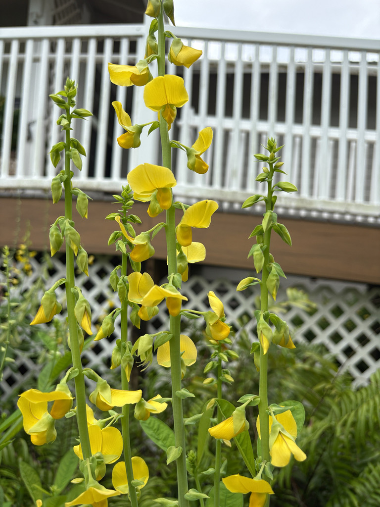

- The seeds rattle in the dry pods — hence the name. The dry pods persist and provide a distinctive sound in wind.
- A FISC Category I invasive in Florida. Toxic to livestock, horses in particular, and spreads aggressively in disturbed areas and pastures.
- The tall upright golden flower spikes are showy — which is why it was originally planted as an ornamental — but the toxicity and invasive status make it a plant to recognize and remove, not to cultivate.
- Kept here as an educational specimen in the Invasive Awareness context.
- The toxin responsible is monocrotaline, a pyrrolizidine alkaloid that causes irreversible liver damage. In horses and cattle it produces a condition known as walkabout disease — liver failure causes neurological damage that makes animals wander aimlessly. Fatal and untreatable once symptoms appear.
- Grows next to the office and simply dominates that spot. Other plants have been tried there and struggled. This one requires nothing and wins every time.
Non-native. Native to Asia. Naturalized throughout the tropics and Florida. Member of Fabaceae — the legume family.
- Showy Rattlebox is the larger, showier cousin of the park's Smooth Rattlebox (PSBP-00110). Like all rattleboxes it sets inflated dry pods whose loose seeds rattle when shaken - the source of the name and of the genus Crotalaria, from the Greek for a rattle. Its tall spikes of large yellow pea-flowers appear in late summer and fall.
- It is native to South and Southeast Asia and was introduced to the United States in the early 1900s as a nitrogen-fixing cover crop - a good idea that went wrong, because the whole plant is poisonous. It contains monocrotaline, a pyrrolizidine alkaloid that damages the liver; livestock, especially horses and poultry, have been killed by eating the plant or seed-contaminated grain.
- As with the Smooth Rattlebox, one insect turns that toxicity into an asset: the Ornate Bella Moth lays eggs on Crotalaria, and its caterpillars take up the alkaloids for their own defense. The alkaloid content tends to run higher in this species than in the natives.
Bees and butterflies visit the flowers, but the notable wildlife tie is the Ornate Bella Moth (Utetheisa ornatrix), which uses Crotalaria as a larval host and sequesters the plant's toxic alkaloids for protection - carrying higher alkaloid levels from this species than from the natives. The toxic foliage and seeds otherwise deter grazing animals, sometimes fatally.
Large, showy, yellow, pea-shaped, about an inch across, in tall upright spikes, mainly late summer to fall.
Cylindrical, inflated, ripening brown; dry seeds rattle inside. The ID confirmation.
Simple (single, not divided), broadest near the tip - distinct from the trifoliate leaves of Smooth Rattlebox.
Erect annual herb, 1.5 to 6 feet tall.
Tall stems of large yellow pea flowers with single (not three-part) leaves, followed by inflated rattling pods. The simple leaf separates it from Smooth Rattlebox.
Do not eat any part of this plant. It contains monocrotaline, a pyrrolizidine alkaloid that causes liver damage.
The same toxin causes progressive liver damage in dogs, and horses are especially susceptible. Keep pets and livestock away from the pods and seeds.


- © Sofia Linares (CC-BY-NC), via iNaturalist
- © Randall Carter (CC-BY-NC), via iNaturalist